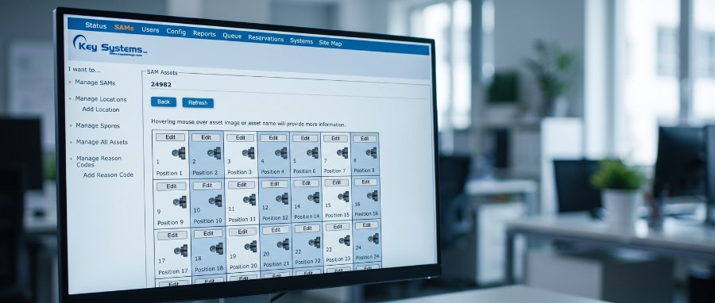

Productgegevens van de fabrikant · Key Systems, Inc.
GFMS™
Global Facilities Management System — beheersoftware voor alle kasten

GFMS™ combineert geavanceerde en aanpasbare software voor de pc, die via de browser werkt en geen installatie op de werkplek vraagt. Key Systems, Inc. helpt u een strategie voor het beheer van uw bezittingen op te stellen die past bij de eisen van uw locatie, ongeacht de omvang, het bereik en de techniek die er al is. Toepassingen met weinig onderhoud, met de nadruk op samenwerking tussen systemen en een eenvoudige opzet voor beveiliging, zijn de hoekstenen van onze visie op systeembeheer.

Softwarekenmerken
Toegang via de browser, wereldwijd
Ingebouwde functies maken het mogelijk elk apparaat met internetverbinding — pc, laptop of smartphone — te gebruiken om uw GFMS™-database, de alarmen en de systeemstatus te beheren en te bewaken.
Gebeurtenissen in real time
GFMS™ verwerkt alle gebeurtenissen van de SAM in real time, zodat alarmen en het bewaken van gebeurtenissen onmiddellijk beschikbaar zijn.
In de cloud
De GFMS-software is nu ook in de cloud beschikbaar, gehost door KSI. De software werkt via de browser en is bereikbaar vanaf elk apparaat met internetverbinding. Alle nieuwe en bestaande klanten komen in aanmerking voor deze dienst*.
* Neem contact op voor de voorwaarden van de clouddienst.
GFMS™ · Softwarekenmerken, vervolg
Beveiligingscertificaten
De BEAR-processoren in de sleutelkast ondersteunen nu TLS 1.2. Eigen beveiligingscertificaten kunnen op de sleutelkast worden geïnstalleerd. De webtoepassing ondersteunt HTTPS voor veilige gegevensoverdracht. Vertrouwelijke informatie in de database wordt versleuteld volgens de norm in de branche.
Beveiliging
De GFMS™-software ondersteunt SSL-certificaten, zodat informatie uit de toepassing veilig versleuteld en verzonden kan worden.
Active Directory
De GFMS-software kan nu worden gekoppeld aan Active Directory. Regel de toegang tot de GFMS-toepassing met Active Directory en beheer wie GFMS mag inzien.
Tijdzones wereldwijd
Of uw systeem zich nu over het land of over de wereld uitstrekt: met GFMS™ synchroniseert u de tijdzonegegevens, zodat de rapportage juist blijft en bezittingen op het goede moment bereikbaar zijn.
Installatiemogelijkheden
De GFMS-software kan binnen uw eigen organisatie worden geïnstalleerd, op een server of op een pc. KSI ondersteunt een reeks Windows-besturingssystemen en SQL Server-versies.
Automatische meldingen en rapporten
Met GFMS™ laat u transactierapporten automatisch in uw postvak bezorgen. Daarnaast kunt u automatische sms- of e-mailmeldingen instellen voor kritieke gebeurtenissen, of simpelweg om een gebruiker eraan te herinneren een sleutel terug te brengen.
Regels voor meerdere gebruikers
Met de krachtige regelmotor van GFMS™ stelt u eigen toegangsregels op, zodat zwaar beveiligde bezittingen nooit door één enkele gebruiker kunnen worden meegenomen.
Eigen beheerdersrollen
Draag het beheer van sleutels en gebruikers binnen uw organisatie over via GFMS-systeemgroepen. Beheerders krijgen systemen toegewezen om te bedienen, en hun inzage en zeggenschap kunnen worden beperkt tot alleen die systemen binnen de GFMS-database.
Rapporten naar eigen inzicht
In GFMS 3 kunt u standaardrapporten aanpassen en opslaan naar de eisen van uw organisatie. Rapporten zijn direct vanuit de toepassing op te slaan als PDF-, Excel- of Word-document. Geplande rapporten worden nu als PDF verzonden.
Bijwerken van software en firmware
Terwijl GFMS™ zich blijft ontwikkelen om aan uw wensen te voldoen, kunnen updates van uw systeem op afstand worden uitgevoerd, in enkele minuten en zonder onderbreking van de werking. Firmware-updates van uw apparatuur gaan rechtstreeks via de GFMS™-software.
Documentversie van de fabrikant: vGFMS_8.14.26. Onder voorbehoud van wijzigingen.
GFMS™ · Standalone en technische eisen
Standalone
Zorgeloos meegroeien
Omdat GFMS™ een toepassing is die via de browser werkt, krijgt u goede prestaties en een eenvoudig te gebruiken werkomgeving, zonder de hoofdpijn van installaties en onderhoud op uw werkstations.
Bescherm uw bezittingen en houd ze bij. Zonder rompslomp.
Eisen aan de GFMS-server
- Microsoft® Windows Server® 2025, 2022, 2019 of 2016, of Microsoft® Windows® 11.
- 25 tot 50 GB schijfruimte, gereserveerd voor de database, de programmabestanden en de logbestanden. De totale omvang hangt af van de inrichting van het systeem en de koppelingen.
- 16 GB werkgeheugen.
- Netwerkverbinding van 100 MB, met kabel.
- Processoren met minimaal 2 tot 4 kernen.
Eisen aan de software
- Internet Information Services (IIS) geïnstalleerd en aangezet.
- Microsoft® SQL Server® 2025, 2022, 2019, 2017 of 2016 — zowel de volledige als de Express-uitvoering wordt ondersteund.
- Microsoft® SQL Server® Management Studio (SSMS).
Let op: bij Microsoft® SQL Server® Express 2022 en ouder is de database maximaal 10 GB; bij Express 2025 maximaal 50 GB.
De installatie van GFMS™
- GFMS™ beheert en bewaakt alle elektronische kasten van Key Systems, Inc.
- GFMS™ is niet aan één database gebonden en kan worden ingericht met de meegeleverde database-installatie of met uw bestaande gegevensbeheer (bijvoorbeeld SQL 2022 of SQL 2025).
- Onze software werkt via de browser, waardoor installatie op de werkplek niet nodig is. In plaats van de meegeleverde webserver mag ook een andere worden gebruikt om GFMS™ te hosten (bijvoorbeeld IIS6 of IIS7).
- De ingebouwde versleuteling kan worden uitgebreid naar beveiligde http.